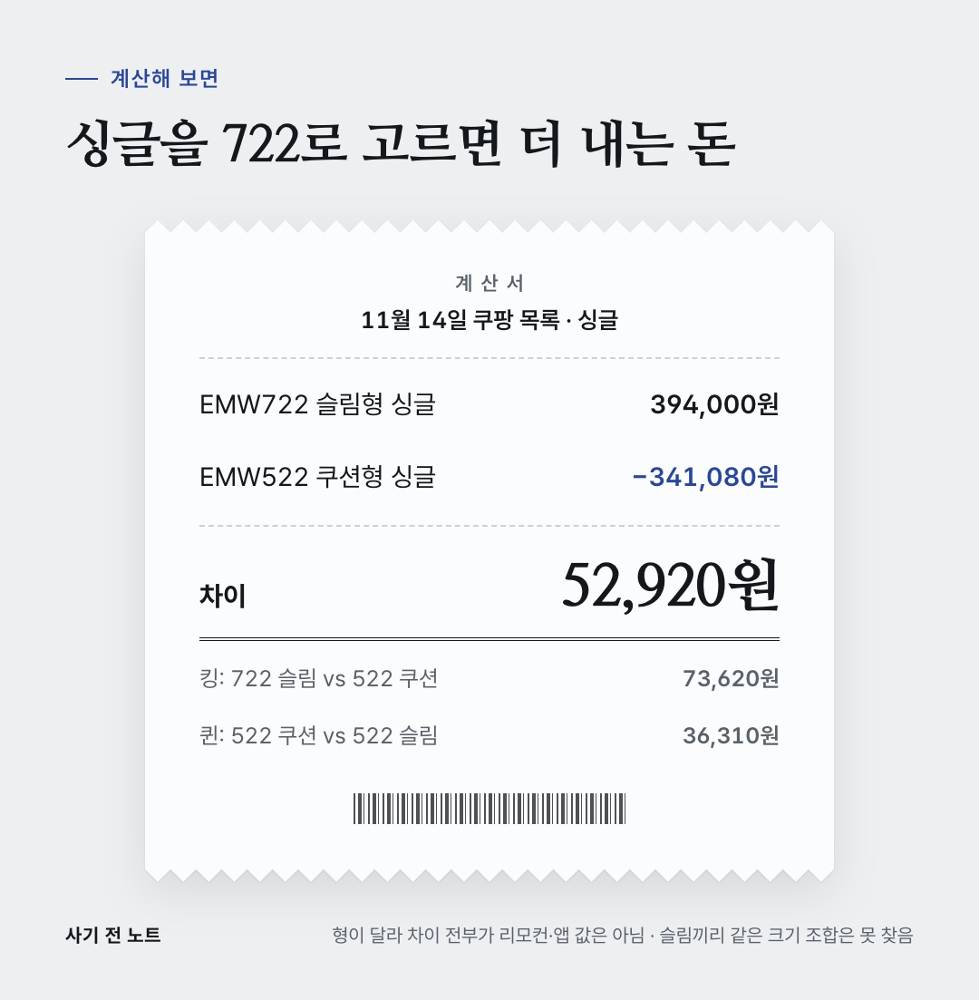

이 게시물은 쿠팡 파트너스 활동의 일환으로, 이에 따른 일정액의 수수료를 제공받습니다.
나비엔온수매트 EMW522 EMW722, 설명서에서 갈리는 줄은 두 군데
누운 채 리모컨이나 휴대폰 앱으로 온도를 바꾸고 싶다면 답은 EMW722입니다. 두 모델은 설명서가 한 권(「숙면매트 온수 사용설명서 EMW723/722/710/522」)인데, 리모컨 항목에 '(EMW723/722 모델에 한함)'이라는 괄호가 붙어 있거든요. 이불 밖으로 나가 본체 버튼을 누를 일이 없어지는 쪽이 722.
리모컨·앱까지 있는 쪽, 나비엔 EMW722 슬림형 싱글(11월 14일 쿠팡 394,000원)

싱글은 좌우 분리 난방이 안 됩니다(퀸·킹만). 리모컨 건전지(AAA)도 따로 준비하세요. UV살균은 헷갈리기 쉬운데, 전원을 꽂으면 도는 자동 살균에는 모델 제한이 없고 앱으로 직접 설정하는 추가 살균만 723/722/710 한정이에요.
폭신한 매트를 원하면 522밖에 없어요
설명서 모델 표에서 722는 슬림형뿐입니다. 쿠션형(-KH 킹, -QH 퀸, -SH 싱글)은 522에만 있어요. 바닥이 딱딱한 방이라 푹신함이 먼저라면 고민할 것 없이 이쪽.
쿠션형을 원할 때, 나비엔 EMW522 쿠션형 싱글(11월 14일 쿠팡 341,080원)
리모컨도 쿠션도 필요 없다면 522 슬림형이 남습니다. 같은 522 퀸끼리 놓으면 슬림형이 쿠션형(378,000원)보다 36,310원 낮았어요.
기본 기능으로 충분할 때, 나비엔 EMW522 슬림형 퀸(11월 14일 쿠팡 341,690원)

나머지는 같습니다. 350W, 물탱크 700ml, 온도 설정 28~45℃. 주문 화면에서는 모델명 뒤 글자만 맞추면 돼요 — 크기는 K 킹·Q 퀸·S 싱글, 형은 S 슬림·H 쿠션.
리모컨 값, 싱글 기준 52,920원?
11월 14일 쿠팡 목록에서 싱글은 722 슬림 394,000원, 522 쿠션 341,080원이었습니다. 다만 형이 달라서 이 차이를 전부 리모컨·앱 값으로 볼 수는 없어요. 슬림끼리 같은 크기로 맞출 조합은 목록에 없었고, 와우쿠폰 같은 조건에 따라 주문 화면 값이 달라질 수 있습니다.

잘 때는 33℃, 쿠션은 35℃
모델이 아니라 매트 형이 정하는 숫자예요. 취침처럼 오래 쓸 땐 슬림 33℃, 쿠션 35℃ 이하. 설명서는 40~44℃에서도 오래 닿으면 저온 화상을 입을 수 있다고 씁니다.
부모님이나 아이가 쓸 매트라면 여기가 핵심입니다. 노약자·영유아·열을 감지하지 못하는 사람은 혼자 쓰지 않게, 보호자 관찰 아래 쓰라고 되어 있어요. 라텍스·메모리폼 매트와 겹쳐 쓰는 것도 피하라고 하고요.

제가 깔고 자 본 매트는 아닙니다. 사양은 경동나비엔 설명서, 가격은 11월 14일 쿠팡 목록 기준으로 확인한 값이에요. 리모컨을 손에 쥘지, 쿠션에 몸을 눕힐지. 그것만 정하면 크기 글자 맞추기로 끝나요.
설명서와 목록 주소
- 경동나비엔 숙면매트 온수 사용설명서 EMW723/722/710/522: https://static.navienhouse.com/data/navienhouse/bbsupload/20260904/8RWdzeAPK.pdf
- 나비엔하우스 숙면매트 목록: https://www.navienhouse.com/package/products
- 노써치 온수매트 질문(EQM721 리모컨·와이파이): https://nosearch.com/qna/water_heated_mattress/10205
#나비엔온수매트 #EMW522 #EMW722 #온수매트슬림쿠션 #경동나비엔